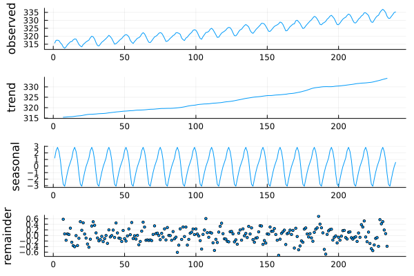
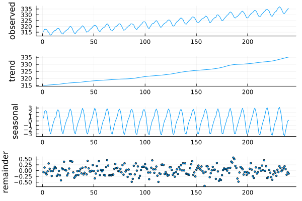

Decomposition
Splitting a series into trend, seasonal and remainder. Three functions, in increasing order of flexibility — and the differences between them matter more than the shared vocabulary suggests.
using TSAnalytics, Plots, Statistics
y = dataset("cardox").value[1:240] # monthly CO₂, 20 yearsDecompose a monthly series
c = classical_decompose(y, 12)
plot(c)
classical_decompose is the textbook method: a centred moving average for the trend, then the average detrended value per calendar month for the seasonal, then whatever is left. It is fast, it is what R's decompose() does, and it has three specific weaknesses.
s = stl_decompose(y, 12)
plot(s)
stl_decompose fixes all three at once. Compare directly:
println("classical: trend NaNs = ", count(isnan, c.trend),
" remainder sd = ", round(std(filter(!isnan, c.resid)), digits=4))
println("stl : trend NaNs = ", count(isnan, s.trend),
" remainder sd = ", round(std(s.resid), digits=4))classical: trend NaNs = 12 remainder sd = 0.2518
stl : trend NaNs = 0 remainder sd = 0.2083Which of the three to use
classical_decompose | stl_decompose | mstl_decompose | |
|---|---|---|---|
| Seasonal pattern | Frozen for the whole series | Evolves | Evolves |
| Endpoints | NaN at both ends | Estimated throughout | Estimated throughout |
| Outliers | No defence | robust=true | robust=true |
| Seasonal periods | One | One | Several at once |
| Speed | Fastest | Fast | Slower |
The frozen seasonal is the big one
jan = [1, 121, 229] # January in years 1, 11 and 20
println("classical, January: ", round.(c.seasonal[jan], digits=3))
println("STL, January: ", round.(s.seasonal[jan], digits=3))classical, January: [1.216, 1.216, 1.216]
STL, January: [0.674, 1.271, 1.723]Classical decomposition returns the same number every January for twenty years, because that is what it computes — one average per calendar position. STL lets the January effect move from 0.67 to 1.72 across the sample, because on this series it genuinely does.
If a series' seasonal shape has changed — and over twenty years it usually has — the frozen version is fitting the average of two different regimes and matching neither.
When you want it frozen anyway
sp = stl_decompose(y, 12; seasonal_window=:periodic)
println("STL periodic, January: ", round.(sp.seasonal[jan], digits=3))
println("repeats exactly: ", sp.seasonal[1:12] == sp.seasonal[13:24])STL periodic, January: [1.195, 1.195, 1.195]
repeats exactly: trueseasonal_window=:periodic sits between the two: a frozen seasonal like classical_decompose, but with STL's endpoint handling and robust=true still available. It matches R's s.window="periodic", which is not a separate algorithm — R widens the window to 10n+1, decomposes normally, then averages each calendar position and recomputes the remainder. The averaging is what makes the repetition exact rather than merely close.
Additive or multiplicative
cm = classical_decompose(y, 12; model=:multiplicative)
println("additive seasonal, Jan: ", round(c.figure[1], digits=3))
println("multiplicative factor, Jan: ", round(cm.figure[1], digits=4))additive seasonal, Jan: 1.216
multiplicative factor, Jan: 1.0038Additive means the seasonal swing is a fixed amount; multiplicative means it is a fixed proportion of the level. Choose by looking: if the seasonal swings grow as the series grows, you want multiplicative — or equivalently, take logs and stay additive.
classical_decompose errors on non-positive values under :multiplicative rather than returning Inf/NaN. R's decompose() does not check and will silently produce garbage.
Handle an outlier
yy = copy(y); yy[120] += 15.0 # one bad observation
s_plain = stl_decompose(yy, 12)
s_rob = stl_decompose(yy, 12; robust=true)
println("weight given to the outlier : ", round(s_rob.weights[120], digits=4))
println("it stays in the remainder : ", round(s_rob.resid[120], digits=2),
" (non-robust: ", round(s_plain.resid[120], digits=2), ")")weight given to the outlier : 0.0
it stays in the remainder : 14.85 (non-robust: 9.79)robust=true runs an outer loop that computes bisquare weights from the residuals and refits, so a point the model cannot explain stops influencing the fit. Here the outlier's weight falls to exactly 0.
The consequence is what matters:
s_clean = stl_decompose(y, 12)
println("trend distortion at t=120, robust : ",
round(s_rob.trend[120] - s_clean.trend[120], digits=3))
println("trend distortion at t=120, non-robust : ",
round(s_plain.trend[120] - s_clean.trend[120], digits=3))trend distortion at t=120, robust : 0.048
trend distortion at t=120, non-robust : 1.195Non-robust, the single bad point drags the trend by 1.195. Robust, it moves it by 0.048 — twenty-five times less. The outlier ends up in the remainder, which is where you want it: visible, and not contaminating the components you intend to use.
s_rob.weights is the full weight vector, so you can find what the decomposition decided to distrust:
println("observations downweighted below 0.5: ", count(<(0.5), s_rob.weights))observations downweighted below 0.5: 43Several seasonal periods at once
using Random
Random.seed!(4)
n = 24*7*8 # eight weeks of hourly data
t = 1:n
yh = 50 .+ 8*sin.(2π.*t./24) .+ 4*sin.(2π.*t./168) .+ randn(n)
m = mstl_decompose(yh, [24, 168]) # daily and weekly
println("seasonal components: ", size(m.seasonal))
println("recovered daily amplitude ≈ ", round((maximum(m.seasonal[:,1]) - minimum(m.seasonal[:,1]))/2, digits=2), " (true 8)")
println("recovered weekly amplitude ≈ ", round((maximum(m.seasonal[:,2]) - minimum(m.seasonal[:,2]))/2, digits=2), " (true 4)")seasonal components: (1344, 2)
recovered daily amplitude ≈ 8.75 (true 8)
recovered weekly amplitude ≈ 5.0 (true 4)mstl_decompose takes a vector of periods and returns one seasonal column per period, fitted iteratively. m.seasonal is a matrix, not a vector — one column per period, in the order given.
Both amplitudes come back a little high, because peak-to-trough on a noisy fitted component measures the noise as well as the signal. What matters is that the two cycles were separated at all: fit only the daily period and the weekly one stays in the remainder.
Hourly electricity, web traffic and call volumes typically carry daily, weekly and annual cycles simultaneously, and fitting only the strongest leaves the others in the remainder where they will show up as "autocorrelation" you cannot explain.
Periods at or beyond half the series length are dropped with a warning rather than silently fitted to noise.
Performance
s_serial = stl_decompose(y, 12; parallel=false)
println("identical to the threaded path: ", s_serial.seasonal ≈ s.seasonal)identical to the threaded path: truestl_decompose and mstl_decompose take parallel, on by default, which threads the cycle-subseries smoothing. It engages only when Julia is started with more than one thread and the period is at least 4. Results are identical either way; pass parallel=false if you are benchmarking or already threading at a higher level.
See also
- Chapters 13–16 — what these components mean, and why the split is a modelling assumption rather than a fact
- Chapter 36 — when a moving holiday defeats every method on this page
- API: Decomposition